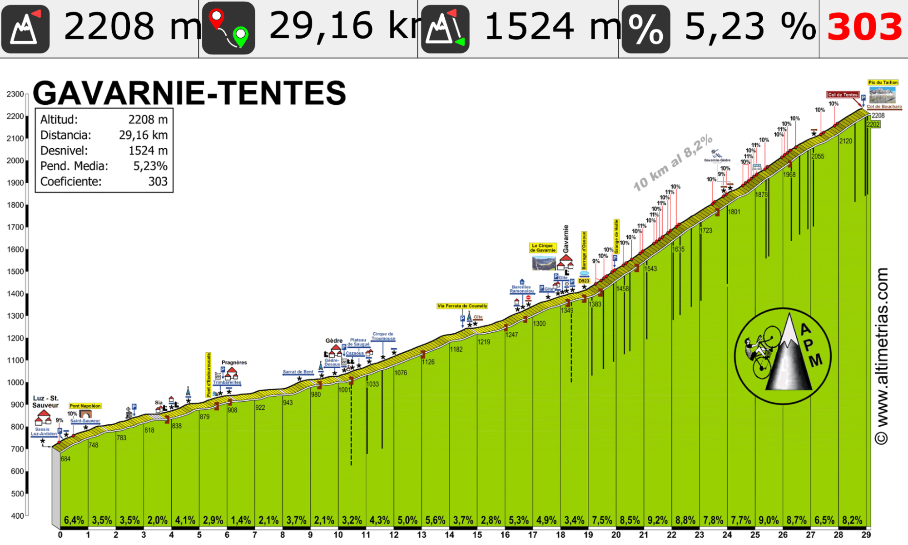
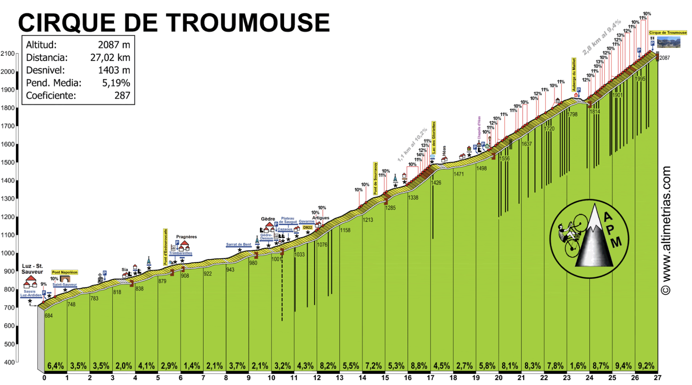
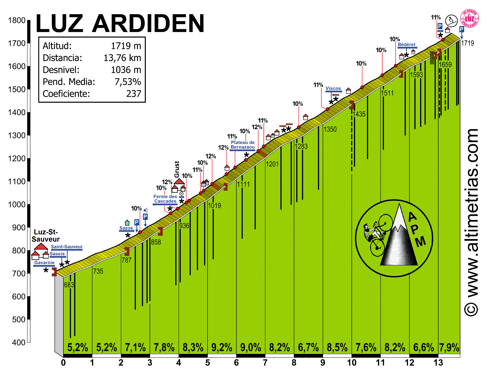
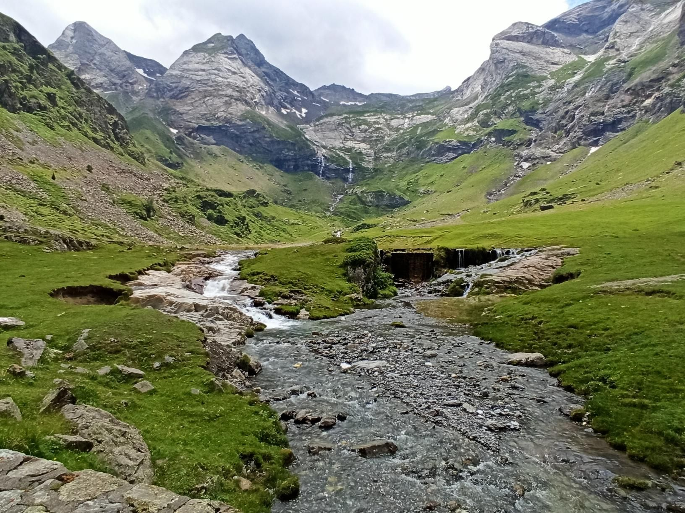
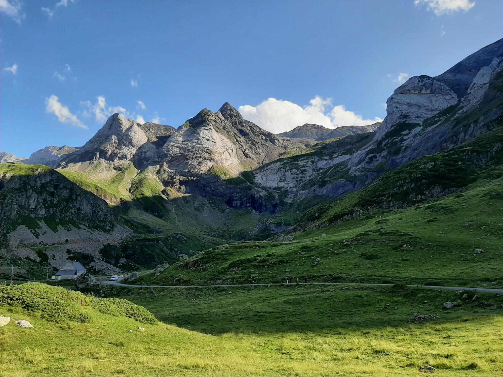

STAGE ROADBOOK
Luz-Saint-Sauveur, Francia
MAZARETE TEAM
🏔️ Pirineos Stage 2026 • Campamento Base: Gauters
Días
4
Puertos
12
SÁBADO 20 JUNIO
Etapa 1
D1: Los Circos
📏 Distancia Total
116,1 km
⛰️ Desnivel Acumulado
3.594 m D+
🏔️ Puertos del Día
Luz Ardiden + Gavarnie / Troumouse
📈 Perfil Altimétrico Completo
NOTA DEL DIRECTOR DE RUTA (CONTINGENCIA):
El track oficial contempla la subida completa a Luz Ardiden y la aproximación al imponente Circo de Gavarnie y Troumouse. Sin embargo, para evitar una fatiga excesiva tras el viaje por carretera, existe un plan de contingencia inteligente: podemos recortar la jornada a 100 km y 2.900 m D+ evitando subir hasta lo más alto de Luz Ardiden, guardando así un valioso cartucho para el resto del Stage.
🗺️ Itinerario Geográfico
Abrir Track GPS Oficial
Ruta oficial circular desde el campamento base
📊 Altimetrías Km a Km
1. Gavarnie / Col de Tentes

2. Circo de Troumouse

3. Luz Ardiden

📸 Galería del Recorrido

